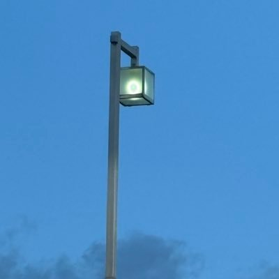

Sugarless1101
Masaki Sato — AI × Security / Web Security

Masaki Sato
@Sugarless1101- 所属
- OCA大阪
デザイン& テクノロジー 専門学校 ホワイトハッカー 専攻 （ 卒業見込） - 分野
- AI × Security / Web Security


制作Projects
OSS脆弱性調査 AIエージェント基盤
Claude Code, Codex, Linux
CVE-2026-49411 Deno の
--deny-netバイパスを報告・採番（GHSA-v8fw-85r8-5m23）AIのセキュリティ活用に興味があり、人の介入なしにほぼフルオートで放置するだけで CVE が取れる調査ハーネス・実行環境を作れるか、を検証しているプロジェクトです。
CLI型エージェント（Claude Code / Codex）を VM 上で常駐運用し、自分は方針決めと最終確認のみ。その結果として採番されたのが CVE-2026-49411（Deno）で、報告と最終トリアージだけ手動で行いました。
とりあーじアナウンサー
Vue, TypeScript, SQLite, チーム開発
依存関係から脆弱性情報を絞り込み、分析結果と根拠を読むWebアプリ
MWS Cup ハッカソンにチーム「浜松鰻」で提出。主にフロントエンド・DB設計を担当し、動画制作や機能提案、壁打ち・ユースケース整理にも参加。
mental-cat
Laravel, LLM, Prompt Injection
Laravel × gpt-4o のチャットアプリに、多層のプロンプトインジェクション対策を実装
固定 JSON スキーマでの応答、入力タグによる分離、重み付けスコア＋二段階しきい値の検出器、出力側ガードレール、
/adminでのLLMOps可視化。port-to-cve
Python, NVD API
ポートスキャン結果から NVD API で CVE / CVSS を照会する CLI
バイブコーディングの時代にコーディング能力を落とさないよう、AIをなるべく使わずに実装。TCP connect スキャン、バナー正規化、NVD API v2.0 での CVSS 取得（v4.0 → v3.1 → v3.0 → v2 フォールバック）。


登壇Talks
-
セキュリティ・キャンプ全国大会に行ってきた話
· WOLF VILLAGE NIGHT #1 にてLT登壇
Security Camp, Product Security, LT
専門B（プロダクトセキュリティ）の受講体験、応募課題への取り組み、SECCAMP RTA CTFでの提出処理の工夫を紹介。
登壇資料（公開調整版） · 公開
年譜Timeline
- OCA大阪デザイン&テクノロジー専門学校 入学
- CompTIA Network+ 取得
- CompTIA Security+ 取得
- LITALICOワンダーオンライン 講師〜
在宅で130以上のご家庭を担当。Scratch / Minecraft Education / Blender、年長〜高校生のほぼ1on1授業。
- SECCON Beginners CTF 参加
- EC-Council CCT 取得
- port-to-cve 公開
- Zenn「Burp Suiteで学ぶSQLインジェクション入門」公開
- Deno の脆弱性報告が GHSA-v8fw-85r8-5m23 として公開
AIエージェント基盤による調査の成果。報告と最終トリアージのみ手動。
- SECCON Beginners CTF 参加WOLF VILLAG, 全体5位
人間主体・AI補助部門では3位。Web 問を担当し、4問に着手して2問 solve。
- WOLF VILLAGE 第1回 交流会当日サポート
- ICI×SST 合同夏季インターン 参加
- Hack Fes. ボランティアスタッフ
- MBSD 仕事体験（診断エンジニアコース）参加
- セキュリティ・キャンプ 全国大会 専門B（プロダクトセキュリティ）修了
- GMO Flatt Security サマーインターン 参加
- GMO IERAE サマーインターン（Web診断部門）参加
- MOTEX インターン（セキュリティブルーコース）参加
- Cybozu サマーインターン（プロダクトセキュリティコース）参加
- MWS Cup ハッカソン 作品提出チーム「浜松鰻」
- CODE BLUE 学生スタッフ予定